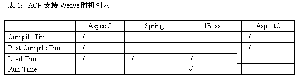

AOP：选择正确的时机进行编织http://www.ibm.com/i/c.gif |
http://www.ibm.com/i/c.gif |
级别： 初级 甘志 (ganzhi@cn.ibm.com), 中国软件实验室（CSDL BJ）的成员, IBM 2005 年 5 月 01 日 本文介绍了在AOP编程中常见的几种Weave时机，并详细说明了这几种Weave时机的差别和适用场合。 在本文中，我们将采用三种重要的实现的例子，来实践本文提出的概念。这三种AOP实现是AspectJ，Spring和JBoss。通过比较他们在Weave时机方面的不同，来获得对于如何选择Weave时机进行判定的准则。由于AspectWerk已经合并到AspectJ中，我们将不再对其进行单独的评论。 对于AOP编程而言，程序的主要逻辑部分和Aspect功能部分的具体实现都可以采用传统的OO技术等实现，这里没有什么新东西。AOP最为特别并使其相对其它方法具有明显优点的部分就在于它能够以多样的方式将程序中用到的多个方面灵活的Weave到一起，形成一个完整的应用程序。因而在学习AOP编程时，如何以准确、简洁、灵活的方式将各个不同的方面Weave到一起，就成为了我们最需要注意的关键点。接下来，我们将阐述Weave操作发生的不同时机，并介绍其适用的场合。 大致上，Weave操作可以发生在如下几个阶段：
在表1中列出了目前几种主流的AOP系统所支持的Weave操作时机。  http://www.ibm.com/developerworks/cn/java/j-aop-weave/images/table1.gif 对于普通应用程序而言，在编译时进行Weave操作是最为直观的做法。由于源程序中包含了应用的所有信息，因此这种方式通常支持最多种类的联结点。利用编译时Weave，我们能够使用AOP系统进行细粒度的Weave操作，例如读取获写入字段。源代码编译之后形成的模块将丧失大量的信息，因此通常采用粗粒度的AOP方法。同时，对于传统的编译成为本地代码的语言如C++、Fortran等来说，编译完成后的模块往往跟操作系统平台相关，这就给建立统一的编译后、载入时以及运行时Weave机制造成了困难。对于编译成为本地代码的语言而言，只有在编译时进行Weave最为可行。尽管编译时Weave具有功能强大、适应面广泛等优点，但他的缺点也很明显。首先，它需要程序员提供所有的源代码，因此对于模块化的项目就力不从心了。即使能够提供所有模块的源代码，它也造成了程序不能进行增量编译、编译时间变慢等不利之处。
为了解决模块化编程的要求，有些AOP框架开始支持后编译时Weave的功能。程序员只需要获得编译完成之后的模块，就能进行Weave操作。在AspectJ中，不管是程序的主逻辑部分还是方面都可以先编译成为模块之后进行Weave，而且主逻辑部分完全可以采用普通的JavaC编译。而在AspectC中，进行后编译时Weave的要求是所有的程序模块都采用AspectC进行编译。可以看出，使用Java这样基于虚拟机的语言对于编写AOP程序是有优势的。
尽管后编译时Weave已经解决了不能获得所有源代码时进行AOP编程的需要，但是在这个框架流行的时代，我们需要更为灵活的安排我们的Weave操作。如果程序的主逻辑部分和Aspect作为不同的组件开发，那么最为合理的Weave时机就是在框架载入Aspect代码之时。因此我们可以看到，在JBOSS和Spring中都提供了这样的方式进行Weave操作。在进行载入时Weave时，Weave操作之后的结果不会被保存。程序的主逻辑部分和Aspect部分可以分别进行开发和编译，而Weave操作在程序别载入时发生。AspectJ、Spring和JBoss都支持载入时Weave。在Spring和JBoss的AOP实现中，框架先于应用程序启动，由框架来负责Weave操作的进行。而在AspectJ中，一个特殊的类加载器被用于这个目的。这个类加载器可以方便的嵌入到框架应用程序中，从而能够为任意的框架提供AOP支持。使用AspectJ进行载入时Weave需要几个步骤： 1. 在编译时为编译器指定-Xreweavable选项来使得AspectJ编译器在.class文件中保存额外的Weave相关信息。 2. 在.jar文件中添加META-INF/aop.xml来指定Weave策略。 3. 在运行时指定AspectJ提供的类加载器。对于jdk 5，我们可以为java虚拟机指定-javaagent选项。而JDK 1.4可以通过系统属性-Djava.system.class.loader来指定类加载器。 在下图中给出了一个AspectJ中配置运行时Weave的配置文件aop.xml，我们在图中给出了详细的注释，感兴趣的读者朋友可以很容易的了解这段代码的用途：
在载入时进行Weave的过程中，AspectJ有一些必须遵守的限制： 1. 要求所有将要被Weave的代码通过AspectJ提供的类加载器载入。 2. Aspect代码必须对Weave类加载器可见，也就是说Aspect必须由Weave类加载器自身或其父加载器载入。 3. 在Weave操作发生之前，所有的Aspect代码都已经被载入
运行时Weave可能是所有Weave方式中最为灵活的，程序在运行过程中可以为单个的对象指定是否需要Weave特定的Aspect。在JBoss项目中，利用运行时Weave的特性完成了JBoss Cache项目。在JBoss Cache中，如果一个对象被放置到Cache中，它的状态就将被CacheAOP监视并且它的状态会被自动同步到一个分布式的缓存中。如果这个对象不需要被缓存，那么它就和AOP不发生任何关系。对它的修改不会引发Cache的同步操作。值得一提的是，尽管AspectJ没有明确提供运行时Weave的能力，在AspectJ中可以通过一个简单的pattern实现运行时Weave。具体请参见Adrian的Blog：http://www.aspectprogrammer.org/blogs/adrian/2005/03/perinstance_asp.html 。
选择合适的Weave时机对于AOP应用来说是非常关键的。针对具体的应用场合，我们需要作出不同的抉择。可以看到，AspectJ为我们提供了最多的选择，即时没有直接支持的运行时Weave也可以通过一个简单的模式来实现。在使用Spring或JBoss提供的AOP框架时，我们可以利用AspectJ来补足这两个框架的不足之处，从而获得更为灵活的Weave策略。
|
||||||||||||||||||||||||||||||||||